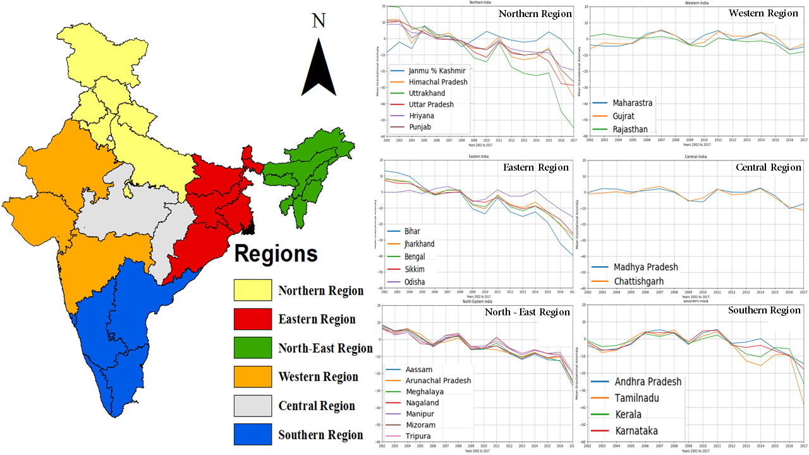
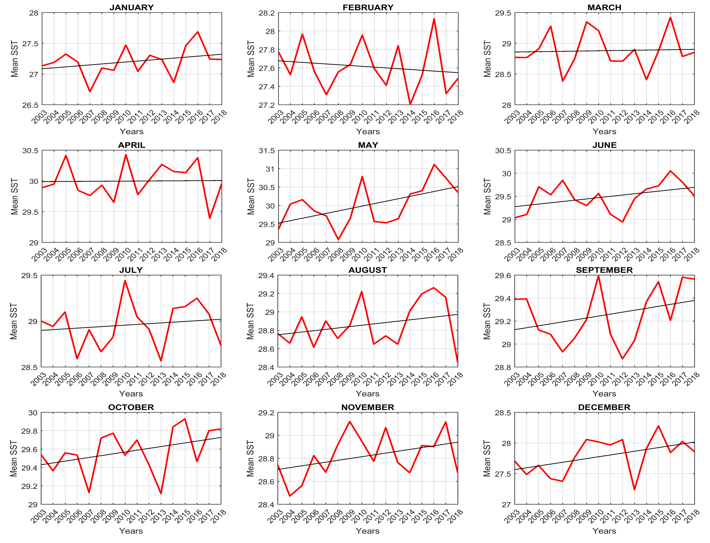
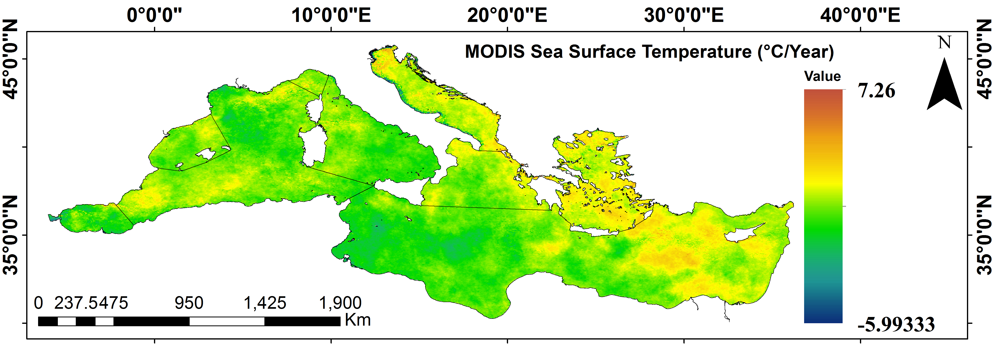
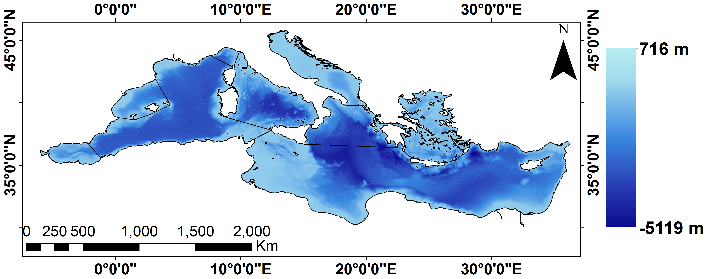
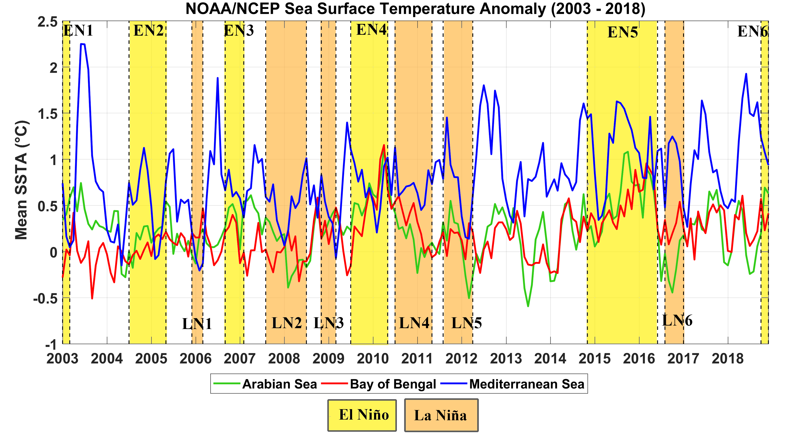

Geospatial Application(using R and MATLAB)
-
Certificates
- Close range Photogrammetry and Terrestrial Laser Scanning at Indian Institute of Remote Sensing, ISRO, Dehradun, India.
See Certificate
-
Projects
- Aerosol Classification, INDIAN INSTITUTE OF REMOTE SENSING (IIRS), (ISRO), Dehradun (India)
- In July, 2017 a large amount of smoke was dispersed into the atmosphere from forest fires in central Portugal region, thereby affecting the air quality in the surrounding regions.
- Detection of smoke aerosols along the vertical air column has been analyzed by using CALIPSO VFM data, while CALIPSO Aerosol Profile data has been used for studying the vertical properties of the aerosols released in the air at the source area for the extended time frame.
- The aerosol distribution over the aforementioned region has been investigated by using aerosol data from MODIS, OMI.
- The long distance transportation of smoke aerosol has been shown using the NOAA HYSPLIT Trajectory Model.
- Detection of smoke aerosols along the vertical air column has been analyzed by using CALIPSO VFM data, while CALIPSO Aerosol Profile data has been used for studying the vertical properties of the aerosols released in the air at the source area for the extended time frame.
- Results are published in the following......
- Ghosh, A., Mehta, M., Biswas, S., 2018, Study of Aerosol Distribution over the Potential Sink Region During Central Portugal Forest Fire Event, in: 2018 9th International Conference on Computing, Communication and Networking Technologies (ICCCNT), IEEE. https://doi.org/10.1109/icccnt.
- Ghosh, A., Mehta, M., Biswas, S.,(2018),Study of vertical distribution of aerosols during central portugal forest fire event using remote sensing data,,Krishi Sanskriti Publication Journal of Basic and Applied Engineering Research p-ISSN: 2350-0077;e-ISSN: 2350-0255; Volume 5, Issue 4; April-June,2018.
- Spatial Decision Support System (SDSS) at JADAVPUR UNIVERSITY
- Worked on data extraction and processing for a digital platform for SDSS (Spatial Decision Support System) for DRCSC funded project entitled "Climate Change Impact Assessment and Adaptation in selected blocks of Bankura and Purulia district, West Bengal".
- See results here
-
Visualization





Right click to open images in new tab
Back to home